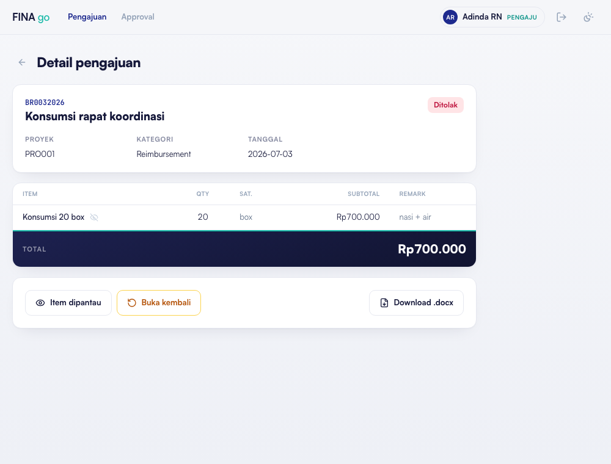
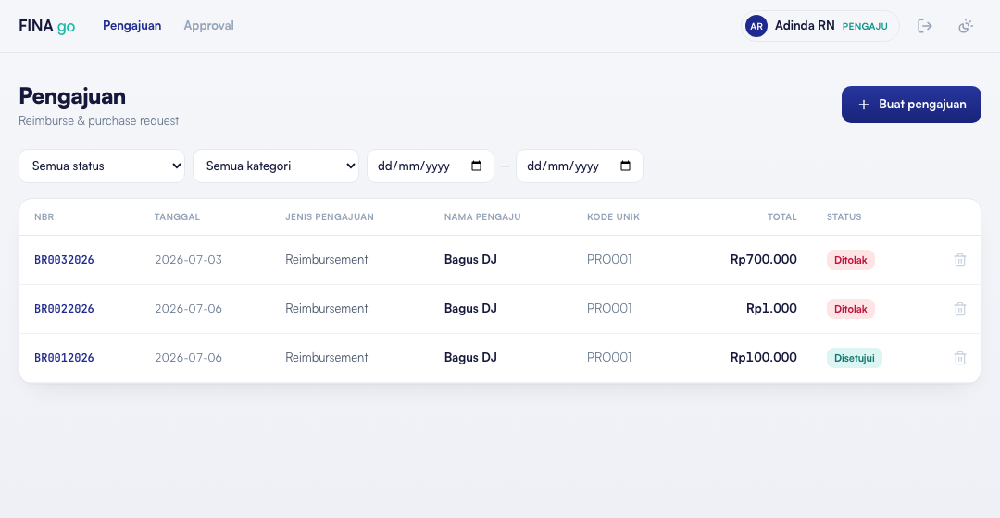

Aplikasi Pengajuan Reimbursement & Purchase Request — FINA go
Laporan Perbaikan Aplikasi
Perihal
:
Tindak lanjut catatan pengguna atas aplikasi FINA go
Tanggal
:
6 Juli 2026
Status
:
Sudah live di produksi
Disusun oleh
:
Tim Pengembang FINA go
I. Pendahuluan
Laporan ini menindaklanjuti dua catatan dari pengguna aplikasi FINA go. Tiap butir kami sajikan singkat: catatannya, yang kami buatkan, dan cara pakainya — dilengkapi tangkapan layar.
II. Perbaikan yang Dilakukan
2.1 Revisi Keputusan — fitur “Buka Kembali”
Catatan pengguna — Approver
“Perlu ada revisi keputusan — misal aku tolak, ternyata berubah pikiran jadi di-acc, biar masih bisa diedit. Soalnya gambar nota-nya kadang tidak keluar.”
Yang kami buatkan
Tombol “Buka Kembali” pada dokumen yang sudah Ditolak / Dikembalikan — keputusan tidak final, bisa direvisi.
Gambar bukti kini dicoba muat 2× otomatis; kalau masih gagal, ada tombol “Muat Ulang” per gambar.
Cara pakai
Kalau bukti belum muncul, tekan “Muat Ulang” pada gambarnya.
Terlanjur menekan Tolak lalu berubah pikiran → tekan “Buka Kembali”.
Dokumen otomatis balik ke tahap sebelumnya (mis. Ditolak → Terverifikasi).
Tekan Setujui — keputusan berubah menjadi disetujui.
Hanya Verifikator / Approver / Admin yang bisa membuka kembali keputusan.

Gambar 1. Tombol “Buka Kembali” pada dokumen berstatus Ditolak.
2.2 Kolom & Filter Tanggal di Daftar Pengajuan
Catatan pengguna — Approver
“Perlu ada kolom tanggal, supaya bisa dipilih / disaring berdasarkan tanggal.”
Yang kami buatkan
Kolom “Tanggal” pada daftar pengajuan.
Penyaring rentang tanggal (dari – sampai) di atas daftar, bisa digabung dengan filter status & kategori.
Cara pakai
Buka menu Pengajuan — kolom Tanggal muncul di tiap baris.
Isi tanggal “dari” dan “sampai” di penyaring atas.
Daftar langsung tersaring sesuai periode.

Gambar 2. Kolom “Tanggal” dan penyaring rentang tanggal pada daftar pengajuan.
III. Status
Kedua perbaikan sudah diuji (alur tolak → buka kembali → setujui berjalan baik) dan diterbitkan ke produksi. Bisa langsung dipakai — cukup muat ulang halaman aplikasi. Bila ada catatan lain, akan kami tindak lanjuti berikutnya.